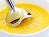

Lappilaisravintola Lounaslista
Lounasmenu



- Maanantai
Juusto-vihanneskeittoa ja kokin sämpylä
Paistettua lohta, sinappikastiketta, tilliperunoita ja kasviksia
Marjakiisseliä ja hunajakermavaahtoa
- Tiistai
Kana-fetajustosalaattia ja kokin sämpylä
Paistettua punakampelaa, pinaattikastiketta ja perunamuusia
Pannukakkua, mansikkahilloa ja kermavaahtoa
- Keskiviikko
Tomaatti-yrttikeittoa ja kokin sämpylä
Kalkkunaleikettä, BBQ-kastiketta, riisiä ja kasviksia
Omenapiirakkaa ja vaniljakastiketta
- Torstai
Rapukeittoa ja kokin sämpylä
Poronkäristystä, perunamuusia, puolukkahilloa ja suolakurkkuja
Hedelmäsalaattia ja kinuskikastiketta
- Perjantai
Savulohisalaatti ja kokin sämpylä
Naudan paahtopaistia, punaviinikastiketta, kermaperunat ja kasviksia
Suklaamousse
Lounaanhinta
Lounaanhinta on 11€ sisältää ruokajuoman - vesi, kotikalja, maito
| Aukioloajat |
Kello: |
| Maanantai - Perjantai |
10.30 - 15.00 |
| Lauantai |
11.00 - 15.00 |
| Perjantai ja Lauantai a la carte -lista |
17.00 - 21.00 |
Ravintola Oula
Hallituskatu 12
96200 ROVANIEMI
Puh. (016) 555 4755
Fax (016) 555 4756
E-Mail: ravintola.oula@oulanet.fi